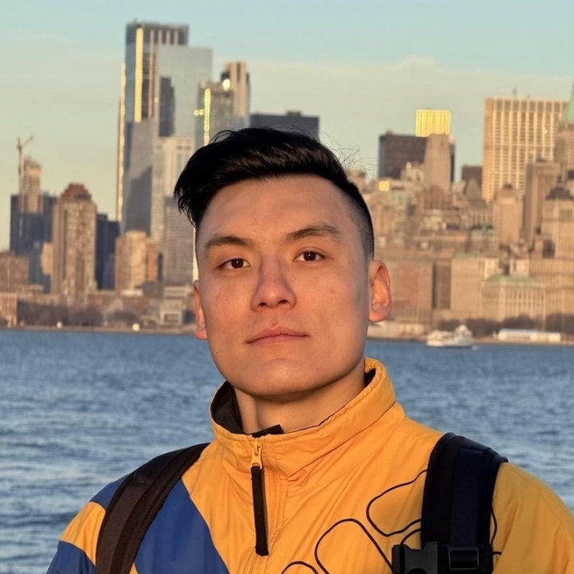

2026
Practical Online KV Cache Compaction for LLM Agents: An Empirical Study
Delayed online KV-cache compaction reduces long-horizon agent memory by up to 80% while largely preserving task accuracy.
Senior Staff Research Scientist & Tech Lead · Foundation Models
I work on long-horizon agentic SFT/RL, harness–policy co-evolution, and efficient foundation models—with a focus on enabling smaller, open-source models to reason, plan, and use tools reliably.
I am a Senior Staff Research Scientist and Tech Lead on LinkedIn’s Foundation Models team, leading 20+ research scientists and engineers across post-training research and strategic GenAI initiatives. My work spans scalable synthetic data, verifiable reward signals, and efficient post-training. Previously, I built large-scale ranking and personalization systems.

Delayed online KV-cache compaction reduces long-horizon agent memory by up to 80% while largely preserving task accuracy.
A self-speculating agent learns to predict its next tool call through joint RL, improving next-call accuracy while preserving task performance.
Dense process rewards enable 8B models to match or outperform larger models on long-horizon planning and tool-use tasks.
A reproducible training pipeline for real-world code repair, with 7–20% absolute gains from on-policy RL under matched conditions.
Led the team that unblocked agentic RL training for GPT-OSS, making practical agent training more accessible to the open-source community.
Co-author and contributor to an open-source suite of Triton kernels for faster, more memory-efficient LLM training.
Led post-training research for domain-adapted foundation models, including synthetic data and stronger function-calling capabilities.
Built and led LinkedIn’s first-generation feed second-pass ranker, scaling it to production and delivering broad member impact.
I’m interested in research that turns capable language models into reliable agents—and makes those capabilities practical and accessible.